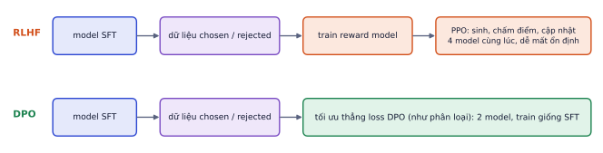
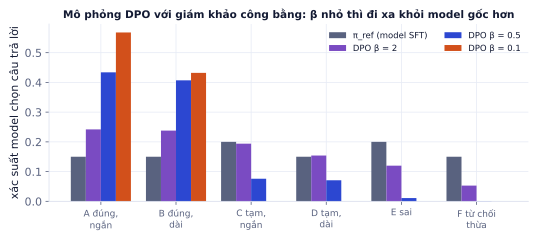
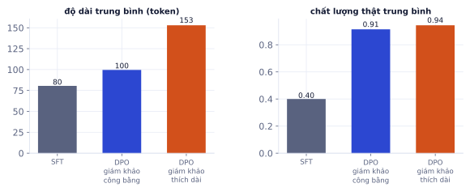

SFT dạy model bắt chước câu trả lời mẫu. Nhưng với nhiều tác vụ, viết ra câu trả lời "hoàn hảo" thì khó, còn so sánh hai câu trả lời xem cái nào tốt hơn thì dễ. Preference tuning học từ những so sánh đó. Đây là bước biến một model biết làm theo hướng dẫn thành một trợ lý hữu ích, trung thực và an toàn hơn. Bài này giải thích RLHF ở mức ý tưởng, đi sâu vào DPO (kèm mô phỏng cho thấy tác dụng của β và bẫy "thích câu dài"), và cách đo kết quả.
Vì sao cần học từ so sánh
Vì sao cần học
Sau SFT, chatbot chăm sóc khách hàng trả lời đúng định dạng nhưng đôi khi dài dòng, giọng cứng, hoặc từ chối những câu hỏi bình thường. Viết lại hàng nghìn câu trả lời mẫu "hoàn hảo" thì tốn kém; để nhân viên chọn "câu A hay câu B tốt hơn" thì nhanh gấp nhiều lần. Preference tuning biến những lựa chọn đó thành tín hiệu train. Đây cũng là kỹ thuật đứng sau ChatGPT, Claude, Llama-Instruct.
Hai lý do so sánh tốt hơn viết mẫu:
Dễ hơn cho người gán nhãn: nhận ra câu tốt hơn dễ hơn nhiều so với tự viết câu tốt nhất (giống chấm bài dễ hơn làm bài).
Dạy cả điều không nên làm: SFT chỉ thấy câu tốt. Dữ liệu so sánh có câu bị loại, nên model học được rõ "dài dòng là xấu", "từ chối thừa là xấu".
Dữ liệu ưu tiên
Mỗi mẫu gồm một prompt và hai câu trả lời: chosen (được ưa hơn, ký hiệu y_w) và rejected (y_l).
{"prompt":[{"role":"user","content":"Đơn DH2051 giao chậm 3 ngày rồi, shop xử lý sao?"}],"chosen":[{"role":"assistant","content":"Xin lỗi anh/chị vì đơn DH2051 bị chậm. Em đã kiểm tra: ..."}],"rejected":[{"role":"assistant","content":"Cảm ơn quý khách đã liên hệ. Chúng tôi luôn trân trọng ..."}]}
Kết quả khi chạy
{'prompt': [{'role': 'user', 'content': 'Đơn DH2051 giao chậm 3 ngày rồi, shop xử lý sao?'}], 'chosen': [{'role': 'assistant', 'content': 'Xin lỗi anh/chị vì đơn DH2051 bị chậm. Em đã kiểm tra: ...'}], 'rejected': [{'role': 'assistant', 'content': 'Cảm ơn quý khách đã liên hệ. Chúng tôi luôn trân trọng ...'}]}
Nguồn dữ liệu:
Nguồn
Ưu
Nhược
Người gán nhãn so sánh hai câu của model
chất lượng cao, theo đúng tiêu chí
tốn thời gian
Phản hồi thật (thích/không thích, chọn bản nháp)
rẻ, đúng người dùng thật
nhiễu, lệch theo người hay phản hồi
LLM mạnh làm giám khảo (AI feedback)
rất rẻ, nhanh
mang thiên lệch của giám khảo (thích câu dài, thích giọng của chính nó)
Lấy câu trả lời từ chính model đang tune (sinh 2 câu với temperature 0.7–1.0) hiệu quả hơn so sánh với câu từ nguồn khác: model học sửa đúng những lỗi nó hay mắc.
RLHF ở mức ý tưởng

RLHF cần train riêng một reward model rồi tối ưu bằng học tăng cường. DPO gộp hai bước đó thành một loss train như SFT.
SFT: model biết làm theo hướng dẫn.
Reward model: một mạng đọc (prompt, câu trả lời) và cho điểm, train sao cho điểm của chosen cao hơn rejected.
PPO: model sinh câu trả lời, nhận điểm từ reward model, cập nhật để tăng điểm, kèm phạt KL để không đi quá xa model SFT ban đầu.
RLHF mạnh nhưng phức tạp: bốn model cùng lúc (policy, reference, reward, value), nhiều siêu tham số, dễ mất ổn định, và model có thể "hack" reward model: tìm ra kiểu câu trả lời được điểm cao dù không thật sự tốt hơn (dài dòng, lặp ý, khen người hỏi).
DPO: bỏ reward model
Direct Preference Optimization (Rafailov và cộng sự, 2023) chứng minh có thể tối ưu thẳng trên dữ liệu ưu tiên bằng một loss giống phân loại nhị phân, không cần reward model hay RL:
model hiện tại tăng xác suất chosen so với mốc bao nhiêu (log-ratio)
ngoặc vuông
lề: log-ratio của chosen trừ log-ratio của rejected
β
hệ số, thường 0.1; điều khiển mức được phép đi xa khỏi π_ref
−log σ(·)
giống loss phân loại: lề càng dương, loss càng nhỏ
Lúc bắt đầu π = π_ref, mọi log-ratio bằng 0, lề bằng 0, loss = −log σ(0) = ln 2 ≈ 0.693. Loss giảm khi model tăng xác suất câu chosen nhiều hơn câu rejected, tính tương đối so với model gốc.
Ví dụ từng bước
β = 0.1. Sau một thời gian train, với một cặp: log-ratio của chosen là +1.5 (model tăng xác suất chosen), của rejected là −2.5 (model giảm xác suất rejected).
Lề = 1.5 − (−2.5) = 4.
β · lề = 0.4.
Loss = −log σ(0.4) = ln(1 + e^−0.4) ≈ 0.513, giảm từ 0.693.
Chú ý: DPO chỉ quan tâm hiệu giữa hai log-ratio. Model có thể giảm xác suất của cả hai câu, miễn là giảm câu rejected nhiều hơn.
Chỉ cần hai model (một đang train, một đóng băng làm tham chiếu; với LoRA thì tham chiếu chính là model nền khi tắt adapter, không tốn thêm bộ nhớ), train như SFT, ổn định hơn PPO nhiều.
Mô phỏng: β làm gì
Mô phỏng nhỏ để thấy rõ cơ chế: một prompt có 6 câu trả lời khả dĩ với chất lượng khác nhau. Model SFT chọn mỗi câu với xác suất 15–20%. Sinh 3.000 cặp từ model SFT, giám khảo công bằng chọn câu tốt hơn (có nhiễu), rồi train DPO với ba giá trị β:

β = 2: chỉ dịch nhẹ khỏi model gốc. β = 0.5: dồn phần lớn xác suất vào hai câu đúng, vẫn giữ chút đa dạng. β = 0.1: gần như chỉ còn hai câu đúng, xa model gốc nhất.
Chất lượng trung bình
KL tới model SFT
Model SFT
0.40
0
DPO β = 2
0.63
0.11
DPO β = 0.5
0.91
0.70
DPO β = 0.1
1.00
1.21
β nhỏ thì học mạnh từ dữ liệu ưu tiên và đi xa khỏi model gốc; β lớn thì thận trọng. Đi xa không phải lúc nào cũng tốt: với model thật, đi quá xa khỏi model SFT dễ làm mất khả năng chung và khuếch đại thiên lệch của dữ liệu ưu tiên.
Đào sâu thêm
Vì sao gọi là "reward model ngầm". Bài báo DPO chỉ ra: với phần thưởng r(x, y) và phạt KL hệ số β, chính sách tối ưu có dạng đóng π(y|x) ∝ π_ref(y|x) · exp(r(x, y)/β). Đảo ngược công thức, r(x, y) = β · log(π(y|x)/π_ref(y|x)) + hằng số. Thay vào mô hình so sánh Bradley–Terry (xác suất y_w thắng = σ(r_w − r_l)), hằng số triệt tiêu và ra đúng loss DPO. Trong mô phỏng trên, phân phối học được khớp công thức đóng: với β = 0.5, hai câu đúng nhận 0.434 và 0.407 so với lý thuyết 0.427 mỗi câu.
Bẫy: giám khảo thích câu dài
Lặp lại mô phỏng nhưng giám khảo có thiên lệch: ngoài chất lượng, cộng thêm điểm cho câu dài (đúng thói quen của nhiều LLM-as-judge).

β = 0.5. Với giám khảo thích dài, model dồn 83% xác suất vào câu "đúng, dài" (giám khảo công bằng chia đều cho câu đúng ngắn và đúng dài). Độ dài trung bình tăng từ 100 lên 153 token, chất lượng thật gần như không đổi (0.91 so với 0.94).
DPO học đúng thứ dữ liệu ưu tiên thưởng, kể cả thiên lệch. Câu trả lời dài hơn 50% mà không tốt hơn nghĩa là người dùng đọc lâu hơn, chi phí token cao hơn.
Lỗi hay gặp
Chỉ báo win rate do LLM giám khảo chấm. Giám khảo LLM thích câu dài và câu giống văn phong của chính nó, nên win rate có thể tăng chỉ vì model nói dài hơn. Luôn báo kèm độ dài trung bình trước/sau, dùng win rate có kiểm soát độ dài (length-controlled), và đọc tay một mẫu.
Các biến thể
Phương pháp
Khác DPO ở đâu
Khi nào dùng
IPO
loss bình phương, chống overfit khi dữ liệu ít nhiễu
dữ liệu nhỏ, sạch
KTO
chỉ cần nhãn thích / không thích từng câu, không cần cặp
có sẵn nút 👍👎
ORPO
gộp SFT và preference vào một bước, không cần model tham chiếu
muốn một bước, tiết kiệm bộ nhớ
SimPO
dùng log-prob chuẩn hóa theo độ dài, không cần tham chiếu
giảm thiên lệch độ dài
Khi nào cần preference tuning
Cần: đã SFT, model đúng định dạng nhưng chất lượng câu trả lời chưa ổn: dài dòng, giọng không phù hợp, từ chối thừa, chưa đủ an toàn. Và có cách thu thập so sánh rẻ.
Không cần: tác vụ có đáp án đúng/sai rõ ràng (trích xuất, phân loại). SFT và eval chính xác là đủ; DPO không thêm gì ngoài rủi ro.
Siêu tham số khởi đầu
Tham số
Giá trị
Ghi chú
β
0.1
thử thêm 0.05 và 0.3
learning rate
5e-7 – 5e-6 (full), 5e-6 – 5e-5 (LoRA)
thấp hơn SFT nhiều; quá cao làm model "vỡ"
epoch
1–2
số cặp
500 – vài nghìn
chất lượng nhãn quan trọng hơn số lượng
# Cần GPU, model, LoRA và dataset ở các bước trước: chạy trên ColabfromtrlimportDPOTrainer,DPOConfigargs=DPOConfig(output_dir="qwen-dpo",beta=0.1,learning_rate=2e-5,num_train_epochs=1)trainer=DPOTrainer(model=model,ref_model=None,args=args,train_dataset=ds["train"],processing_class=tok,peft_config=lora_cfg)# ref_model=None + LoRA: tham chiếu = model nền
Không chạy trên trangCần GPU, model, LoRA và dataset ở các bước trước: chạy trên ColabMở trên Colab ↗
(Tên tham số đã kiểm tra với TRL 1.17.)
Đo kết quả
Tỉ lệ thắng (win rate): cho model sau DPO và trước DPO trả lời cùng prompt test, giám khảo (LLM hoặc người) chọn bên tốt hơn, đổi vị trí ngẫu nhiên, không ghi tên model. Tính hòa là nửa thắng.
Độ dài: báo cáo độ dài trung bình trước/sau.
Khả năng chung và metric tác vụ: kiểm tra không bị tụt (DPO có thể làm hỏng định dạng đã SFT).
Độ đồng thuận của nhãn: cho 2 người chấm cùng 10% số cặp; nếu chỉ đồng ý dưới khoảng 70% thì tiêu chí chưa rõ, dữ liệu đang dạy model điều mơ hồ.
Ví dụ từng bước
150 prompt test: model sau DPO thắng 81, thua 51, hòa 18.
Win rate = (81 + 18/2) / 150 = 90 / 150 = 0.60.
Độ dài trung bình: 142 → 168 token (+18%). Cần đọc tay vài chục cặp để chắc rằng 0.60 không chỉ do câu dài hơn.
Ghi nhớ: SFT dạy "trả lời thế này", preference tuning dạy "trong hai cách trả lời, cách này tốt hơn". Dữ liệu ưu tiên tốt quan trọng hơn thuật toán: model sẽ học cả thiên lệch của người (hoặc model) chấm.
Tự kiểm tra nhanh
β = 0.1.
Tóm tắt bài và thuật ngữ
Chủ đề
Ý chính
Dữ liệu
prompt + chosen + rejected, tốt nhất sinh từ chính model đang tune
RLHF
reward model + PPO + phạt KL; mạnh nhưng phức tạp
DPO
loss phân loại trên lề log-ratio; 2 model; ổn định
β
nhỏ: đi xa khỏi model gốc; lớn: thận trọng
Bẫy
model học cả thiên lệch của giám khảo (câu dài)
Đo
win rate mù + độ dài + metric tác vụ + đồng thuận nhãn
Thuật ngữ
Nghĩa
preference data
dữ liệu so sánh chosen / rejected
RLHF
học tăng cường từ phản hồi của người
reward model
model chấm điểm câu trả lời
PPO
thuật toán học tăng cường dùng trong RLHF
KL penalty
phạt khi đi xa model tham chiếu
DPO
tối ưu trực tiếp trên dữ liệu ưu tiên
reference model (π_ref)
model SFT đóng băng làm mốc
reward hacking
tối ưu điểm thưởng mà không tốt hơn thật
Bradley–Terry
mô hình xác suất thắng dựa trên hiệu điểm
length bias
thiên lệch ưu tiên câu dài
Ô tự chấm đã giải đúng0 / 2
Bài 1
Loss DPO
tính tay
β = 0.1.
Lời giải
Bắt đầu: −log σ(0) = ln 2 ≈ 0.693. Lề (2 − (−1)) = 3, nhân β = 0.3: −log σ(0.3) = ln(1 + e^−0.3) ≈ 0.554. Lề −3: ln(1 + e^0.3) ≈ 0.854. Loss giảm khi model tăng xác suất của chosen nhiều hơn rejected (so với bản gốc).
Bài 2
Tỉ lệ thắng
tính tay
So sánh 100 prompt: model sau DPO thắng 62, thua 30, hòa 8.
Lời giải
(62 + 4)/100 = 0.66. Bỏ hòa: 62/92 ≈ 0.674. Ghi rõ dùng cách tính nào; và với 100 prompt, sai số khoảng ±0.09, nên 0.66 là cải thiện thật nhưng con số chính xác còn dao động.
Bài 3
Vai trò của β
khái niệm
Điều gì xảy ra khi β rất nhỏ (0.01) và rất lớn (1.0)? Với dữ liệu ưu tiên có nhiều nhiễu (người gán nhãn hay bất đồng), bạn chọn β thế nào?
Lời giải
β nhỏ: lề phải rất lớn mới giảm được loss, model được phép đi xa khỏi bản gốc, dễ overfit vào dữ liệu ưu tiên và mất khả năng chung. β lớn: chỉ cần thay đổi nhỏ là loss đã giảm, model bám sát bản gốc, thay đổi ít. Dữ liệu nhiễu: chọn β lớn hơn (giữ gần bản SFT) và lọc các cặp người gán nhãn bất đồng.
Bài 4
Thiết kế dữ liệu ưu tiên
thiết kế
Bạn có chatbot chăm sóc khách hàng đã SFT. Thiết kế cách thu thập 500 cặp chosen/rejected trong 2 tuần với chi phí thấp, và tiêu chí để người gán nhãn chọn.
Lời giải
Lấy 500 câu hỏi thật từ log (đã che thông tin cá nhân). Với mỗi câu, sinh 2 câu trả lời từ model SFT với temperature 0.8 (hai seed). Nhân viên CSKH chọn câu tốt hơn theo tiêu chí theo thứ tự ưu tiên: đúng chính sách, giải quyết được vấn đề, ngắn gọn, lịch sự. Cho phép "ngang nhau" và loại các cặp đó. 10% số cặp được hai người chấm để đo độ đồng thuận; nếu dưới 70% thì làm rõ tiêu chí.
Bài 5
Chuẩn bị dataset cho DPO
code
Từ file JSONL có prompt, answer_a, answer_b, preferred ("a" hoặc "b"), tạo dataset Hugging Face với ba cột prompt, chosen, rejected dạng hội thoại, bỏ các dòng "hòa".
Code tham khảo
importjsonfromdatasetsimportDataset# file mẫu 3 dòng để chạy thử: một dòng hòa sẽ bị bỏdemo=[{"prompt":"Đơn giao chậm, shop xử lý sao?","answer_a":"Xin lỗi anh/chị, em kiểm tra ngay: ...","answer_b":"Cảm ơn quý khách đã liên hệ ...","preferred":"a"},{"prompt":"Bàn có kèm gương không?","answer_a":"Có ạ.","answer_b":"Có, gương 60×40 cm gắn sẵn trên bàn.","preferred":"b"},{"prompt":"Shop mở cửa mấy giờ?","answer_a":"8h–21h.","answer_b":"Từ 8 giờ tới 21 giờ.","preferred":"tie"}]withopen("prefs.jsonl","w",encoding="utf-8")asf:f.writelines(json.dumps(d,ensure_ascii=False)+"\n"fordindemo)rows=[]forlineinopen("prefs.jsonl",encoding="utf-8"):r=json.loads(line)ifr["preferred"]notin("a","b"):continuegood,bad=(r["answer_a"],r["answer_b"])ifr["preferred"]=="a"else(r["answer_b"],r["answer_a"])rows.append({"prompt":[{"role":"user","content":r["prompt"]}],"chosen":[{"role":"assistant","content":good}],"rejected":[{"role":"assistant","content":bad}],})ds=Dataset.from_list(rows).train_test_split(test_size=0.5,seed=0)# dữ liệu thật: test_size=0.1print(ds)print(ds["train"][0]["chosen"])
Lấy 600 prompt (tác vụ của Lab 8 hoặc câu hỏi chăm sóc khách hàng). Với mỗi prompt, sinh 2 câu trả lời từ model SFT ở Lab 8 với temperature 0.8.
Gán nhãn chosen/rejected: dùng LLM lớn làm giám khảo với tiêu chí rõ, đổi vị trí ngẫu nhiên; tự kiểm tra tay 50 cặp và đo tỉ lệ đồng ý.
Train bằng TRL DPOTrainer với LoRA, β = 0.1, lr 5e-6 đến 5e-5, 1–2 epoch.
Đánh giá: win rate của model sau DPO so với trước trên 100 prompt test, độ dài trung bình câu trả lời, và metric tác vụ của Lab 8 (để chắc không tụt).
Thử β = 0.05 và 0.3, so sánh.
Xong khi
Có win rate sau DPO so với trước, đo bằng LLM-as-judge có kiểm tra tay.
Có bảng theo β và nhận xét về độ dài câu trả lời.
Code tham khảo
frompeftimportLoraConfigfromtransformersimportAutoModelForCausalLM,AutoTokenizerfromtrlimportDPOTrainer,DPOConfigname="qwen-extract-sft-merged"# model Lab 8 đã gộp LoRA, hoặc model SFT bất kỳmodel=AutoModelForCausalLM.from_pretrained(name,torch_dtype="auto")tok=AutoTokenizer.from_pretrained(name)args=DPOConfig(output_dir="qwen-dpo",beta=0.1,learning_rate=2e-5,num_train_epochs=1,per_device_train_batch_size=4,gradient_accumulation_steps=4,logging_steps=10,eval_strategy="epoch",fp16=True,report_to="none")trainer=DPOTrainer(model=model,ref_model=None,args=args,train_dataset=ds["train"],eval_dataset=ds["test"],processing_class=tok,peft_config=LoraConfig(r=16,lora_alpha=32,target_modules="all-linear",task_type="CAUSAL_LM"))trainer.train()
Xong bài khiTỉ lệ thắng của model sau DPO so với trước, đo bằng LLM-as-judge có kiểm tra tay.